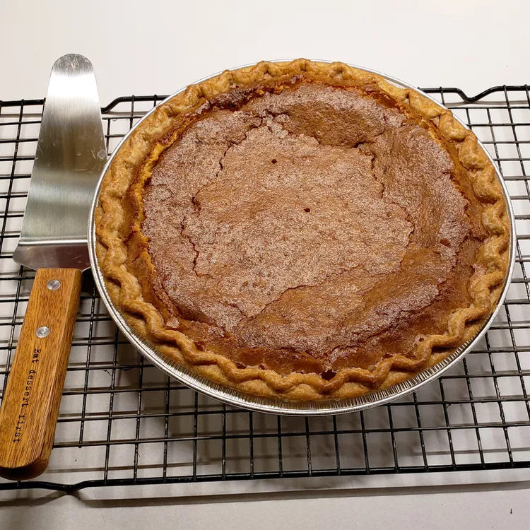

Chess Pie

This chess pie is a very old Southern recipe. It's a very sweet, rich dessert which cannot be described as anything but marvelous.
This is not my personal recipe but was passed to me by my grandmother and from her grandmother and so on and so forth.
You will think you have died and gone to heaven when you taste this, especially when served with whipped cream.
Ingredients
- ½ cup butter
- 2 cups white sugar
- 1 teaspoon vanilla extract
- 4 large eggs
- ¼ cup evaporated milk
- 1 tablespoon cornmeal
- 1 tablespoon distilled white vinegar
- 1 (9 inch) unbaked pie shell
Steps
- Preheat the oven to 425 degrees F (220 degrees C).
- Mix butter, sugar, and vanilla together in a large bowl.
- Mix in eggs
- Tir in evaporated milk, cornmeal, and vinegar until smooth
- Pour into pie shell.
- Bake in the preheated oven for 10 minutes
- Reduce heat to 300 degrees F (150 degrees C) and continue to bake for 40 minutes
- Let cool before cutting.
Return to main page